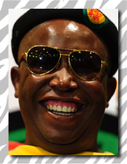
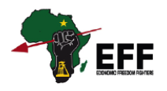

|  |  |
JULIUS MALEMAAge: 32Status: SingleJulius Malema's Economic Freedom Fighters (EFF) has officially been recognised as a political party on Thursday (September 5). Malema is the former leader of the ANC Youth League. After a series of suspensions from the party for hate speech and for sowing racial discord in the party, he was expelled in 2012 |
In September 2012, Malema was charged with fraud and money laundering. The EFF was then formed by those ousted from the league. It has announced a radical policy basis and programme, including the nationalisation of mines and other assets and the expropriation of land without compensation. The party has grand ambitions of winning the elections despite considerable odds, not least of which is funding. One of their backers, businessman Kenny Kunene, recently left the party and it is unclear where the considerable numbers needed to finance a campaign will come from |